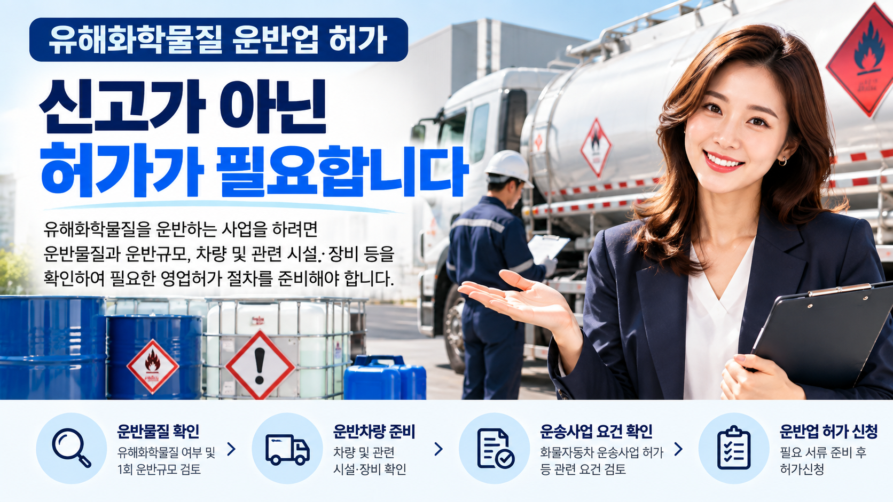
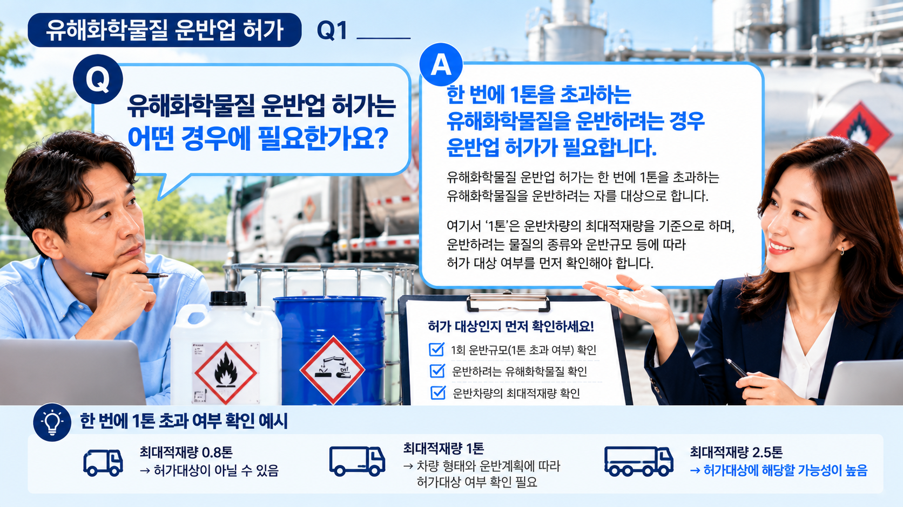
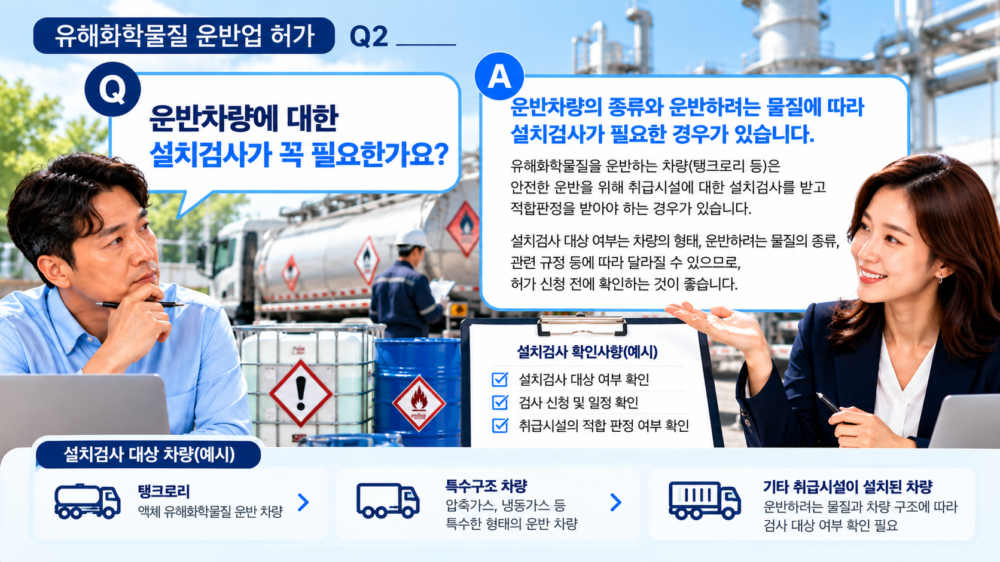

01. 유해화학물질 운반업 허가란?
유해화학물질을 일정 규모 이상 운반하는 영업을 하려는 경우에는 화학물질관리법에 따른 유해화학물질 영업허가 대상에 해당하는지 확인해야 합니다.
따라서 사업을 준비할 때는 단순히 운반차량부터 준비하기보다 실제 운반하려는 화학물질과 운반규모를 먼저 확인하는 것이 좋습니다.
먼저 허가대상 여부를 확인하세요.
운반하려는 물질이 유해화학물질인지, 한 번에 어느 정도를 운반할 계획인지 등을 확인한 후 운반업 허가대상 여부를 검토하는 순서가 좋습니다.

02. 운반물질과 운반규모를 확인합니다.
허가 검토의 출발점은 실제로 어떤 유해화학물질을 어느 정도 규모로 운반할 것인지 확인하는 것입니다.
현재 기준으로 한 번에 1톤을 초과하는 유해화학물질을 운반하려는 경우에는 운반업 허가대상 여부를 확인할 필요가 있습니다.
따라서 취급물질 목록과 운반계획, 차량의 운반규모 등을 함께 살펴보는 것이 좋습니다.
03. 운반차량도 함께 검토합니다.
운반업 허가를 준비할 때는 실제 유해화학물질 운반에 사용할 차량의 종류와 구조 등을 확인해야 합니다.
탱크로리 등 차량 자체에 유해화학물질 취급시설이 설치되어 있거나 별도의 설비를 이용하는 경우에는 해당 차량과 시설에 적용되는 검사요건이 있는지도 함께 확인할 필요가 있습니다.

04. 주요 허가 준비사항
구체적인 준비사항은 운반하려는 물질과 차량, 사업형태 등에 따라 달라질 수 있습니다.
| 구분 | 주요 확인사항 |
|---|---|
| 운반물질 | 유해화학물질 종류 및 운반계획 |
| 운반규모 | 1회 운반량 및 허가대상 여부 |
| 차량 | 운반차량의 종류·구조 및 사용계획 |
| 시설·장비 | 관련 취급시설·장비 및 검사 대상 여부 |
| 운송자격 | 사업형태에 따른 관련 운송사업 요건 |
| 인력 | 사업에 필요한 기술인력 및 관리요건 |
05. 화물자동차 운송사업 관련 요건도 확인합니다.
유해화학물질 운반업을 준비하는 경우에는 유해화학물질 영업허가뿐 아니라 실제 차량을 이용한 운송사업에 필요한 자격이나 허가가 갖추어져 있는지도 확인할 필요가 있습니다.
다만 사업형태와 사용하는 차량 등에 따라 적용되는 요건이 달라질 수 있으므로 실제 사업구조를 기준으로 검토하는 것이 중요합니다.
06. 허가절차는 어떻게 진행될까요?
허가 준비는 운반업에 해당하는지 확인한 뒤 차량과 시설·장비 및 관련 요건을 점검하고, 필요한 자료를 갖추어 영업허가를 신청하는 순서로 진행합니다.
07. 신청 전에 확인하면 좋은 자료
- 운반하려는 유해화학물질의 종류
- 예상하는 1회 운반규모
- 사용할 운반차량의 종류 및 현황
- 차량에 설치된 시설·장비 현황
- 관련 운송사업 허가 또는 등록 현황
- 사업장 및 인력 준비현황
처음부터 모든 서류를 완벽하게 준비할 필요는 없습니다. 현재 확보하고 있는 자료를 기준으로 부족한 부분을 확인하면서 준비할 수 있습니다.
08. 실무에서 자주 놓치는 부분
- 운반차량을 먼저 구입하기보다 허가대상과 차량요건을 먼저 확인하는 것이 좋습니다.
- 운반하려는 물질이 실제 유해화학물질에 해당하는지 먼저 확인해야 합니다.
- 1회 운반규모는 허가대상 여부를 판단하는 중요한 검토사항입니다.
- 차량의 종류와 구조에 따라 취급시설 검사 여부가 달라질 수 있습니다.
- 유해화학물질 운반업 허가와 별도로 사업형태에 따른 운송사업 관련 요건도 함께 살펴봅니다.
- 실제 허가신청 전에는 차량·시설·장비 및 필요한 인력요건을 최종적으로 확인하는 것이 좋습니다.
유해화학물질 운반업을 준비하고 계신가요?
운반하려는 물질과 1회 운반규모, 사용할 차량 및 현재 준비상태를 기준으로 필요한 사항을 먼저 확인해 보세요.